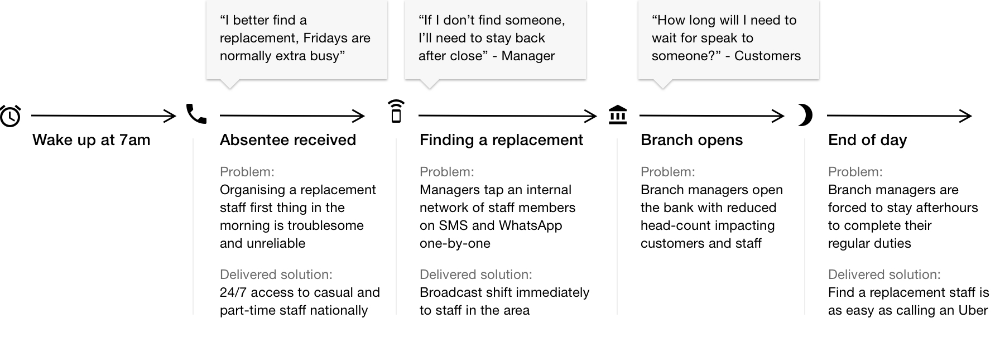

CommBank Enterprise Staff Resourcing Mobile App
1000's of staff in over 900 branch locations. Frequent requests for personal, vacation and sick leave impacts our ability to service customers. We designed a mobile app that gives managers the ability to tap the whole CommBank network to find a CBA staff to work in their branch.
Finding a suitable replacement when staff were sick or needed time off proved difficult for managers in branches around Australia —we needed a better way to allocate and track adhoc shifts
Finding contingent staff members - user journey
Staff are asked to continually manage and maintain both recurring and single date availability so they’re alerted when new shifts are broadcasted — we tried and tested 2 different approaches, an optimised and a prescriptive view
CanWork provides a platform for managers to broadcast shifts to our network of casual and part-time staff members instantly — our challenge was to balance giving managers control, fair allocation of shifts and discouraging favouritism
A single shift will go through several permutations over the course of a single working day — our system effectively keeps both parties up to date
Towards the end, our IA became convoluted and chaotic — we designed a simple system to sort shift states by drawing a line between statuses that ‘requires attention’ and ‘good to know’
We wanted to teach users to respond with urgency when they saw the colour 'yellow' and an action was required from the user.
All adhoc shift work are now brokered and paid using this mobile app. All casual and part-time staff have opportunities to pick up additional work in locations around their area — managers don’t have to sweat over finding additional staff at a moments notice and frequently working overtime when there is reduced headcount

More projects

NSW Government Planning
Building Rules Prototypes
New South Wales building codes and planning regulations run to thousands of page. For DIY enthusiasts, they’re impossible to decode.

Woolworths Dan Murphy's
Mobile App (v1)
The app became a hugely successful emerging sales channel for Dan Murphy's. Drinkers could identify bottles of wine directly through this mobile app to purchase again or save for later